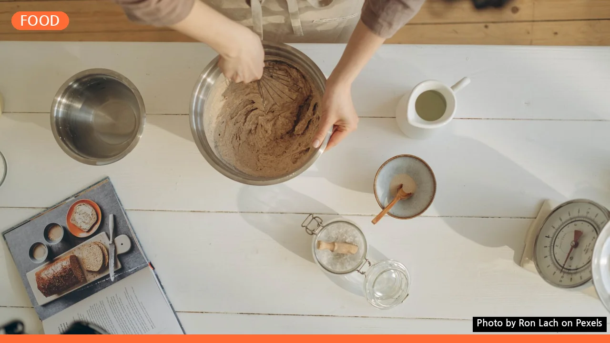
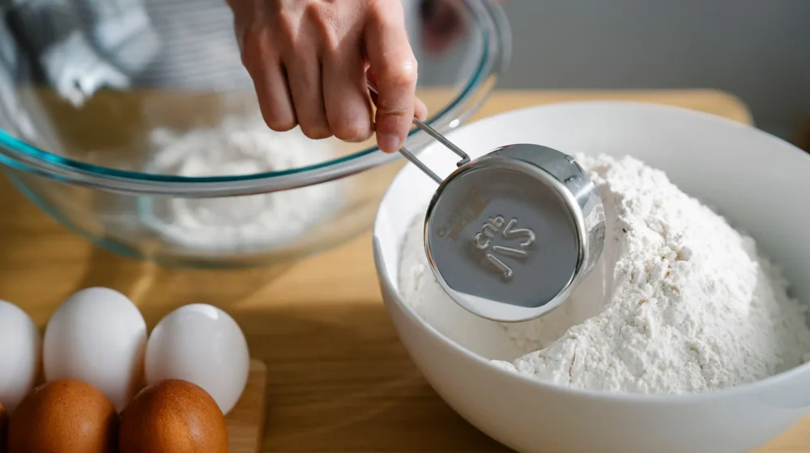

홈베이킹 초보자, 이것부터 챙기세요! 필수 도구 체크리스트
사진: Ron Lach / Pexels (무료 이미지, 출처 표기)
홈베이킹을 시작하는 당신이 놓치지 말아야 할 첫걸음

홈베이킹을 시작하고 싶지만, 어떤 도구를 사야 할지 막막하셨나요? 시중에 판매되는 수많은 베이킹 용품 앞에서 고민하는 초보 베이커들을 위해, 첫 베이킹을 성공적으로 이끌어 줄 필수 도구부터 실용적인 구매 팁까지 친절하게 안내해 드립니다. 이 글을 통해 자신감 있는 홈베이킹을 시작해보세요.
성공적인 첫걸음, 홈베이킹 필수 도구 7가지
맛있는 베이킹을 위한 첫 단계는 정확한 계량과 적절한 도구 사용입니다. 다음은 홈베이킹을 시작할 때 반드시 갖춰야 할 필수 도구들입니다. 2026년 8월 기준으로 이 도구들만 있다면 기본적인 레시피는 충분히 시도할 수 있습니다.
있으면 더 편리한 홈베이킹 선택 도구
위의 필수 도구들로 어느 정도 숙련되었다면, 다음 도구들을 추가하여 베이킹의 폭을 넓힐 수 있습니다. 이 도구들은 작업 효율성을 높여주거나 더욱 섬세한 결과물을 만드는 데 도움을 줍니다.
- 밀대: 쿠키 반죽이나 타르트지 등을 얇게 밀 때 필요합니다. 나무, 스테인리스, 실리콘 등 다양한 재질이 있습니다.
- 고운 체: 밀가루, 코코아 가루 등을 쳐서 뭉침 없이 부드러운 식감을 만들 때 사용합니다. 손잡이가 있는 제품이 편리합니다.
- 스크래퍼: 반죽을 자르거나 옮길 때, 작업대를 깔끔하게 정리할 때 유용합니다. 플라스틱 또는 스테인리스 재질이 일반적입니다.
- 식힘망: 구워낸 빵이나 쿠키의 밑면이 눅눅해지지 않도록 통풍시키며 식히는 데 필수적입니다.
- 오븐 온도계: 오븐 내부의 실제 온도를 정확히 확인하여 레시피에 맞는 베이킹 환경을 조성하는 데 도움이 됩니다.
- 실리콘 브러쉬: 빵 위에 계란물을 바르거나 녹인 버터를 바를 때 사용합니다. 위생적이고 세척이 편리합니다.
현명한 구매를 위한 베이킹 도구 체크리스트
도구를 구매하기 전, 몇 가지 사항을 고려하면 후회 없는 선택을 할 수 있습니다. 단지 저렴하다는 이유만으로 구매하기보다는 장기적인 관점에서 접근하는 것이 좋습니다.
- 재질 확인: 식품에 직접 닿는 도구이므로 BPA Free, 식품 등급 실리콘, 스테인리스 스틸 등 안전한 재질인지 확인해야 합니다.
- 세척 용이성: 도구가 분리되거나 식기세척기 사용이 가능한지 등 세척이 편리한지 확인하세요. 위생과 직결되는 부분입니다.
- 보관 공간: 주방의 수납 공간을 고려하여 너무 부피가 큰 도구는 피하거나 다용도 제품을 선택하는 것이 좋습니다.
- 다용도성: 하나의 도구가 여러 용도로 활용될 수 있다면 경제적이고 효율적입니다. 예를 들어, 큰 볼은 반죽과 재료 섞기에 모두 사용 가능합니다.
- 세트 구매 vs 낱개 구매: 초보자라면 필수 도구 위주로 구성된 베이킹 스타터 세트를 구매하는 것도 좋은 방법입니다. 불필요한 중복 구매를 줄일 수 있습니다.
오래 쓰는 홈베이킹 도구, 관리 및 보관 팁
구매한 베이킹 도구를 오래, 그리고 위생적으로 사용하기 위해서는 올바른 관리와 보관이 중요합니다. 도구의 수명을 연장하고 식품 안전을 지키는 데 도움이 됩니다.
- 즉시 세척: 사용 후에는 가능한 한 빨리 미지근한 물과 중성세제로 세척하는 것이 좋습니다. 특히 설탕이나 버터가 묻은 도구는 시간이 지나면 굳어서 세척이 어려워집니다.
- 완전 건조: 세척 후에는 물기를 완전히 제거하고 건조해야 합니다. 금속 도구는 녹이 스는 것을 방지하고, 실리콘이나 나무 도구는 곰팡이 발생을 막을 수 있습니다.
- 분리 보관: 도구끼리 부딪혀 손상되는 것을 막기 위해 종류별로 분리하여 보관하거나, 실리콘 패드 등을 활용하여 보호합니다.
- 재질별 관리: 나무 도구는 물에 오래 담가두지 않고 건조한 곳에 보관하며, 플라스틱이나 실리콘은 착색에 주의하여 사용 후 바로 세척합니다.
초보자를 위한 쉬운 베이킹 레시피와 도구 활용법
도구 준비를 마쳤다면 이제 실제로 베이킹을 시작할 차례입니다. 처음부터 복잡한 레시피보다는 필수 도구만으로도 충분히 만들 수 있는 쉬운 품목부터 도전해보세요.
예를 들어, 머핀이나 쿠키는 전자저울과 계량컵, 볼, 주걱, 오븐 팬만 있으면 만들 수 있습니다. 핸드믹서는 버터 크림화나 계란 휘핑 단계에서 유용하며, 실리콘 주걱은 반죽을 깔끔하게 정리하는 데 큰 역할을 합니다. 이처럼 각 도구의 역할을 이해하며 레시피를 따라가다 보면 어느새 능숙한 베이커가 되어 있을 것입니다.
베이킹은 정확함과 인내심이 필요한 과정이지만, 그만큼 완성되었을 때의 성취감은 매우 큽니다. 이 가이드가 여러분의 즐거운 홈베이킹 여정에 도움이 되기를 바랍니다.
🔗 이 글도 함께 보면 좋아요: 간헐적 단식, 매일 8시간만 먹으면 될까? 초보자를 위한 핵심 방법과 주의점
관련 추천 상품
이 포스팅은 쿠팡 파트너스 활동의 일환으로, 이에 따른 일정액의 수수료를 제공받습니다.